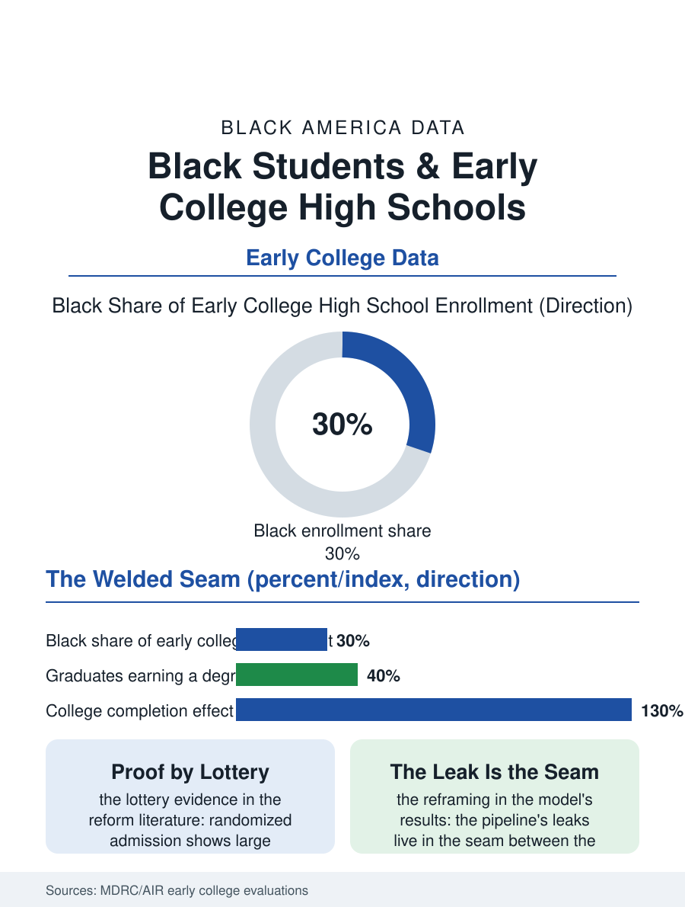

Black Education
Two Diplomas, One Walk: Early College High Schools
Graduating with the associate degree at seventeen, on lottery-proven effects: the seam between high school and college, welded. The early college file.

The early college high school collapses the boundary the pipeline leaks at: students, recruited in the cohorts the model targets, substantially Black and first-generation in the flagship networks, take the college curriculum inside the high school and graduate with the associate degree or its credits banked, at rates the randomized evaluations have made among the strongest in the reform literature. This article reads the early college file.
The Model and Its Evidence
The design's elements are the file's foundation: the small school or school-within-a-school sited at or partnered with the community college, the cohort's curriculum mapped backward from the degree so that the high school and college courses are one sequence rather than two institutions' coincidence, the supports, the advisory, the tutoring, the college knowledge curriculum, built into the schedule rather than offered at its margins. The evaluation file is the reform literature's pride: the randomized studies, possible because the oversubscribed schools admit by lottery, find the early college's effects on the college enrollment and degree completion of its students large and persistent, with the effects for the Black and first-generation students the model targets running at or above the average, a distributional result the reform file rarely gets to record. The degree's value in the transfer data is the file's honest complication: the credits banked at the community college transfer into the state's publics on the articulation system's terms, and the student's destination decides the credit's currency, the flagship's graduates carrying the associate into the state university as juniors while the private and out-of-state destinations discount it in the pattern of the transfer file's general losses. The summer bridge file is the model's front porch in the evaluations, the weeks before the first college course in which the cohort's study habits and the faculty's expectations are calibrated in the same room, and the bridge's completion data predict the first semester's survival with a precision the placement test's single score does not approach.
Who Gets In, Who It Serves
The admissions file is the model's equity crux, because the lottery's applicant pool is itself a sorting: the families who apply are the informed and the organized of the target population, and the schools' recruitment, through the middle schools and the churches of the districts they serve, is therefore a designed component rather than a marketing afterthought in the networks that post the representative cohorts. The student support file inside the model answers the readiness question the critics pose: the early college student takes the college course at fifteen with the scaffolding the partner builds, the seminar, the embedded tutoring, the professor and the high school teacher planning as one faculty, and the course completion data by cohort show the scaffolding carrying the students the traditional sequence would have tracked away from the college curriculum in the tenth grade, the model's whole argument in miniature. The cost file is the public's: the degree's credits are bought at the community college's rate inside the public budget, a per-degree cost the fiscal analyses compare favorably with the remediation and dropout costs of the standard pipeline, the model's expansion constraint being the college partner's capacity and the state's dual enrollment funding formula rather than the evidence.
The Boundary, Moved
The early college file closes on what the model proves about the boundary it dissolves: the leaks of the traditional pipeline, the senior summer's melt, the placement test's remediation assignment, the credit's transfer loss, are not properties of the students but of the seam between the two systems, and welding the seam for a cohort moves its outcomes by the margins the lotteries measured, which reframes every other file's leak as a design specification awaiting its welder. The model's scale remains the file's limit, the early colleges enrolling a small fraction of the target population nationally, their replication dependent on the partnership's local construction in each district, a craft production against the pipeline's industrial scale. The evaluations count the degrees in the cohorts' thousands. The file's last entry is the graduation's double line, the seventeen-year-old crossing the stage twice in one spring, the high school diploma and the associate degree in the same walk, in a family whose college history the second document begins, which is the pipeline's whole repair drawn in a single procession, and the data's instruction to build more of the road it shortens.
More in Black Education
Black Educational Attainment: High School Parity, the College Gap
About 89 percent of Black adults hold a high school diploma and one in four holds a bachelor's degree or higher — the attainment ladder, the college completion gap, and the generational trend.
Historically Black Colleges and Universities: Enrollment and Degrees
More than 100 HBCUs enroll roughly 290,000 students and award about one in six Black bachelor's degrees — an outsized share from a small sector. The federal education data.
Black College Enrollment: 2.4 Million Students
About 2.4 million Black students are enrolled in American colleges — nearly two-thirds of them women. The NCES enrollment data by sector, level, and trend.
Source: American Institutes for Research and MDRC randomized evaluations of Early College High Schools; Jobs for the Future network data.